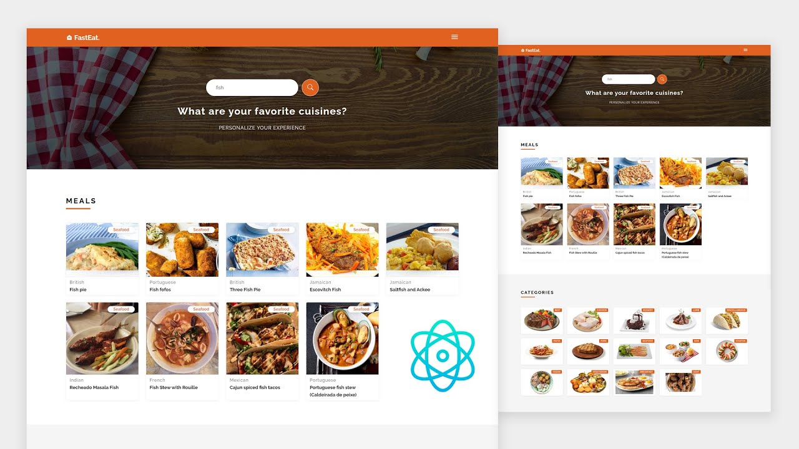

Project 1 - Personal Website
A personal website showcasing my skills, projects, and experiences. Built using HTML, CSS, and JavaScript, this website serves as an online portfolio and a platform to share my journey in web development.
Technologies Used: HTML, CSS, JavaScript
Click Here
Project 2 - Recipe App
An interactive recipe application where users can browse through a collection of recipes, search for specific dishes, and save their favorite recipes for future reference. Developed using Python and Flask framework, this web app provides a seamless experience for food enthusiasts.
Technologies Used: Python, Flask

Project 3 - Task Manager
A task management system designed to help users organize and prioritize their tasks efficiently. Built with Java and Spring Boot framework, this application allows users to create, update, and delete tasks, as well as set deadlines and reminders for upcoming deadlines.
Technologies Used: Java, Spring Boot